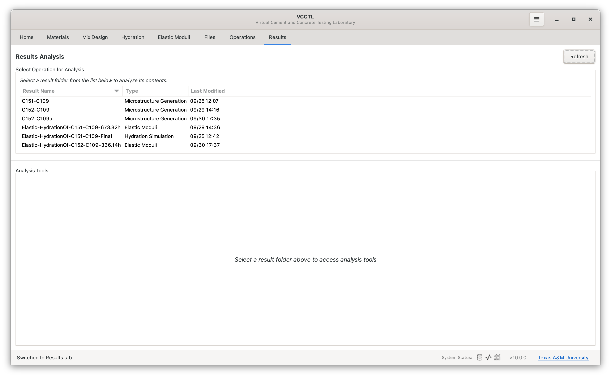
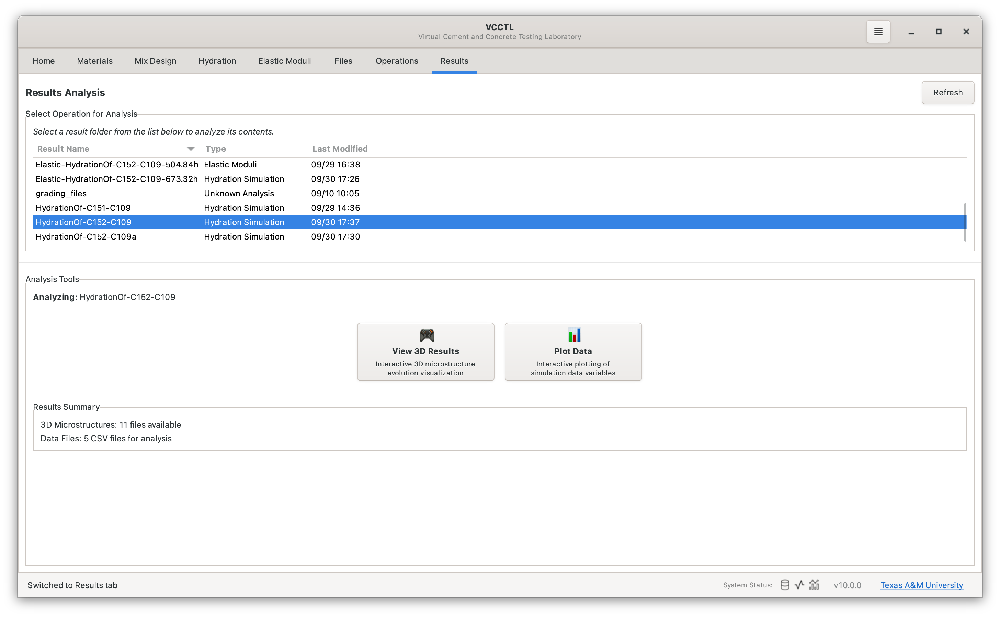
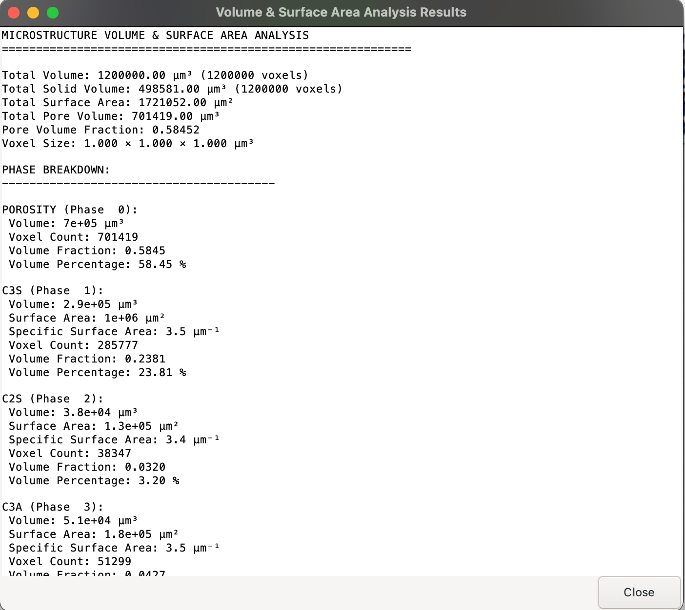
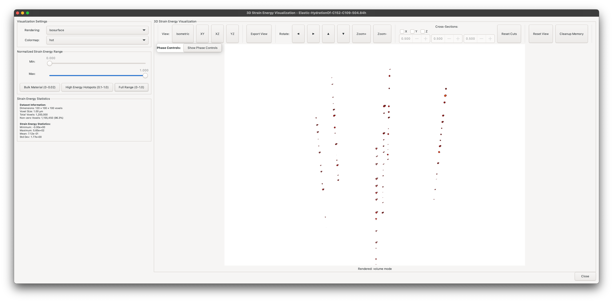

Results Visualization¶
Overview¶
The Results panel in VCCTL provides a centralized location for viewing and analyzing outputs from all completed operations. Whether you've generated microstructures, run hydration simulations, or calculated elastic moduli, this panel gives you access to visualization tools, data plots, and export capabilities.
Key capabilities:
- View 3D microstructure visualizations with phase coloring
- Plot hydration degree of hydration and heat evolution
- Analyze strain energy distributions in 3D
- Examine interfacial transition zone (ITZ) properties
- Perform connectivity and percolation analysis
- Export data for external analysis
Accessing the Results Panel¶
- Click the Results tab in the left sidebar
- The panel displays a list of all completed operations
- Select an operation to view available visualization options
- Click action buttons on the right to open specific viewers

Understanding Operation Types¶
The Results panel displays different visualization buttons depending on operation type:
Microstructure Operations¶
Operations created from the Mix Design panel after pressing "Create Mix".
Available visualizations:
- View 3D: Interactive 3D microstructure viewer with phase data
- Phase Data: Detailed phase volume fractions and statistics

Hydration Operations¶
Operations created from the Hydration panel simulating cement hydration over time.
Available visualizations:
- View 3D: 3D viewer with time slider for hydration snapshots
- Plot Data: Charts showing degree of hydration and heat evolution

Elastic Moduli Operations¶
Operations created from the Elastic Moduli panel calculating mechanical properties.
Available visualizations:
- View Effective Moduli: Table of calculated elastic properties
- View Strain Energy 3D: 3D heat map of strain energy distribution
- View ITZ Analysis: Plots of property variation near aggregates (if present)

3D Microstructure Visualization¶
The 3D viewer provides interactive exploration of microstructure geometry and phase distribution.
Opening the 3D Viewer¶
- Select a microstructure or hydration operation in the Results panel
- Click "View 3D"
- The PyVista-based viewer opens with the microstructure rendered

Navigation and Camera Controls¶
Rotation Controls:
- Left/Right/Up/Down Arrow Boxes: Rotate view around center
- Zoom+/Zoom-: Zoom in/out
Camera Views:
Use the camera preset buttons to switch between standard orientations:
- Isometric: 3D perspective view showing depth
- XY Plane: Top-down view (looking down Z-axis)
- XZ Plane: Front view (looking along Y-axis)
- YZ Plane: Side view (looking along X-axis)

Navigation Tips
- Start with Isometric view to get overall 3D perspective
- Switch to orthographic views (XY, XZ, YZ) for precise alignment inspection
- Use Zoom+ to focus on regions of interest
Rendering Modes for Microstructure Visualization¶
The viewer offers four rendering modes optimized for different purposes:
Volume Mode (default):
- Renders solid volumes of each phase
- Best for visualizing overall structure
- Good rendering performance
Isosurface Mode:
- Renders solid surfaces of each phase
- Best for visualizing overall structure
- Faster rendering performance
- Clear phase boundaries
Pixel Art Mode:
- Shows individual voxels as small cubes
- Useful for detailed inspection at high zoom
- Reveals discrete nature of simulation grid
- Slower rendering for large systems
Wireframe Mode:
- Indicates surfaces as a transparent mesh of wires
- Useful for overall inspection of sparse microstructures
- Not available for visualizing strain energy heat maps
Phase Data and Visibility Control¶
Understand microstructure composition and control which phases are visible.
Viewing Phase Data¶
Click the "Phase Data" button in the toolbar to view detailed phase statistics:

Information displayed:
| Column | Description |
|---|---|
| Phase Name | Material phase (e.g., C₃S, C₂S, CSH, Porosity) |
| Phase ID | Numerical identifier in microstructure file |
| Voxel Count | Number of voxels occupied by this phase |
| Volume Fraction | Percentage of total volume (%) |
| Color | RGB color used for visualization |
Phase Evolution
For hydration operations, phase volumes change over time. Use the time slider (see below) to see how phases evolve during hydration.
Phase Visibility Controls¶
Control which phases are displayed to focus on specific features:

Checkbox Controls:
- Check: Phase is visible in 3D view
- Uncheck: Phase is hidden from view
- Color Swatch: Click to change phase color
Phase Visibility
The spinbox next to each phase can be used adjust the transparency of that phase
Common Analysis Workflows:
- Hide porosity: See only solid phases to understand particle packing
- Show only one phase: Isolate specific cement compound or hydration product
- Hide aggregates: Focus on paste microstructure
- Show only capillary porosity: Visualize pore network connectivity

Cross-Section Analysis¶
View internal structure by cutting through the microstructure along specific planes.
Enabling Cross Sections¶
Three independent clipping planes are available:
- X Plane: Cuts perpendicular to X-axis
- Y Plane: Cuts perpendicular to Y-axis
- Z Plane: Cuts perpendicular to Z-axis

To create a cross section:
- Check the checkbox for desired plane (e.g., "Z Plane")
- Adjust the slider to move the cutting plane position
- The view updates in real-time showing the cross section
Position Spinbox:
- Left (0%): Plane at minimum coordinate (start of axis)
- Middle (50%): Plane at center of microstructure
- Right (100%): Plane at maximum coordinate (end of axis)
Cross-Section Analysis Applications¶
Single Plane:
- View 2D slice showing phase distribution
- Examine particle size distribution
- Inspect hydration product morphology at specific location
Two Perpendicular Planes:
- Create corner view showing two internal faces
- Better spatial understanding of 3D structure
- Useful for presentations and publications
Three Planes:
- Isolate specific internal region
- Focus on localized phenomena (e.g., around one aggregate particle)
- Study microstructure at specific coordinates
Best Practice
Start with Z-plane at 50% to see a central horizontal slice. This often provides the most representative view of the overall microstructure.
Hydration Time Evolution¶
For hydration operations, explore how the microstructure changes over simulation time.
Using the Time Slider¶

Accessing time snapshots:
- Open 3D viewer for a hydration operation
- Locate the time slider at the bottom of the viewer
- Drag the slider or click time markers to load different snapshots
Time Information:
- Time Labels: Show simulation time (e.g., "0.0 h", "24.0 h", "168.0 h")
- Current Time: Displayed prominently above slider
- Snapshot Count: Shows available time points (e.g., "Snapshot 5 of 12")
Observing Hydration Progress¶
As you move through time, observe:
Early Times (0 hours to 24 hours):
- Anhydrous cement particles visible (C₃S, C₂S, C₃A, C₄AF phases)
- Initial formation of hydration products (CSH, CH)
- Rapid porosity reduction
Middle Period (1 day to 7 days):
- Continued cement dissolution
- Growing CSH and CH phases filling pore space
- Microstructure densification
Later Times (7+ days):
- Most cement hydrated
- Dominant CSH phase
- Residual unreacted cement particles (if any)
- Final porosity distribution
Animation Workflow
Manually step through time snapshots to create animation frames for presentations. Use consistent camera angle and phase visibility settings across all frames.
Connectivity Analysis¶
Analyze percolation and connectivity of specific phases through the microstructure.
Performing Connectivity Analysis¶
- Open 3D viewer for any operation
- Click the "Connectivity" button in the toolbar
- The analysis runs (may take 30 seconds to 2 minutes)
- Results appear in a dialog showing connectivity statistics

Understanding Connectivity Results¶
The analysis identifies connected components - regions of the same phase that form continuous paths through the microstructure.
Key Metrics:
| Metric | Description |
|---|---|
| Total Components | Number of separate connected regions |
| Largest Component | Volume of biggest connected region |
| Percolation | Whether phase forms connected path across system |
Percolation Status:
- X-direction: Phase connects from left to right face
- Y-direction: Phase connects from front to back face
- Z-direction: Phase connects from bottom to top face
Interpreting Results¶
Porosity Connectivity:
- Percolating: Fluid can flow through the microstructure
- Non-percolating: Isolated pores, impermeable material
- Critical for transport property predictions
CSH Connectivity:
- Well-connected: Good load-bearing network
- Isolated regions: Potential weak points
- Related to mechanical property development
Unhydrated Cement:
- Many small components: Well-dispersed particles
- Few large components: Particle clustering
- Affects hydration kinetics and final properties
Periodic Boundaries
VCCTL implements periodic boundary conditions, meaning phases that reach one boundary are considered connected to the opposite boundary. This represents an infinite periodic array of the simulated volume.
Hydration Data Plotting¶
View quantitative time-series data from hydration simulations.
Opening Plot Viewer¶
- Select a hydration operation in Results panel
- Click "Plot Data" button
- A matplotlib-based plot window opens
Available Plots¶
You may select any variable as the abcissa for the plot. Typically time or degree of hydration are used for the abcissa.
You may also select one or any number of other properties to display as the ordinate. Each property selected will be plotted as a separate curve with a different color.
Commensurate Units
The graphing utility allows you to plot data that have mutually
incommensurate units. For example, you can simultaneously plot temperature and degree of hydration versus time on the same plot. This is not advised because it makes interpretation of the plots difficult.
Common Plots¶
Degree of Hydration vs Time:
- Shows fraction of cement that has reacted (0.0 to 1.0)
- X-axis: Time (hours or days)
- Y-axis: Degree of hydration (dimensionless)
- Typically shows rapid early growth then asymptotic approach to final value
Cumulative Heat Evolution:
- Shows total heat released by hydration reactions
- X-axis: Time (hours or days)
- Y-axis: Heat (J/g of cement)
- Used for comparison with calorimetry experiments
Heat Rate:
- Shows instantaneous rate of heat release
- X-axis: Time (hours or days)
- Y-axis: Heat rate (W/g of cement)
- Shows characteristic peaks corresponding to different reaction stages
Plot Interaction¶
Zoom and Pan:
- Zoom: Draw rectangle with left mouse button
- Pan: Right-click and drag
- Reset: Click home icon in toolbar
Export:
- Click save icon to export as PNG, PDF, or SVG
- Use for publications and presentations
Validation Workflow
Export degree of hydration and heat data to CSV, then plot alongside experimental calorimetry measurements to validate time calibration parameters.
Strain Energy Visualization¶
For elastic operations, visualize 3D distribution of strain energy density.
Accessing Strain Energy Viewer¶
- Select an elastic operation in Results panel
- Click "View Strain Energy 3D" button
- PyVista viewer opens with strain energy heat map

Strain Energy Heat Map¶
Color Scale:
- Blue/Green: Low strain energy (uniform stress)
- Yellow/Orange: Moderate strain energy
- Red: High strain energy (stress concentrations)
Normalized Scale:
- Values range from 0.0 to 1.0
- Normalization allows comparison between different operations
- Absolute values depend on applied boundary conditions
Threshold Control¶
Adjust threshold range to focus on specific energy levels:

Preset Buttons:
- Bulk Material (0-0.02): View majority of material with low strain energy
- High Energy Hotspots (0.1-1.0): Focus on critical stress concentration regions
- Full Range (0-1.0): See complete energy distribution
Custom Range:
- Drag Min and Max sliders to set custom range
- Real-time update as you adjust thresholds
- Useful for exploring specific energy bands
Rendering Modes¶
Isosurface Rendering:
- Shows surfaces of constant strain energy
- Smooth, continuous appearance
- Best for understanding overall distribution
- Faster rendering
Volume Rendering:

- Semi-transparent volume display
- Shows internal energy gradients
- Reveals 3D structure of stress fields
- Slower rendering but more detailed
Pixel Rendering:

- Shows individual voxels
- Highest detail level
- Useful for zooming into specific regions
- Slowest rendering for large volumes
Strain Energy Cross Sections¶
Combine strain energy visualization with cross-section planes:

- Enable one or more cross-section planes (X, Y, or Z)
- Adjust plane position with slider
- View strain energy distribution on internal slices
- Identify locations of high energy within microstructure
Analysis Applications:
- Locate ITZ stress concentrations near aggregates
- Find pores acting as stress concentrators
- Identify potential crack initiation sites
- Understand load transfer paths through microstructure
Effective Moduli Results¶
View calculated composite elastic properties for elastic operations.
Opening Moduli Viewer¶
- Select an elastic operation in Results panel
- Click "View Effective Moduli" button
- Table dialog displays calculated properties
Results Displayed:
| Property | Typical Value | Description |
|---|---|---|
| Bulk Modulus | 15 GPa to 22 GPa | Resistance to compression |
| Shear Modulus | 10 GPa to 15 GPa | Resistance to shear deformation |
| Elastic Modulus | 25 GPa to 40 GPa | Young's modulus (with aggregates) |
| Poisson's Ratio | 0.20 to 0.30 | Lateral strain ratio |
Exporting Moduli Data¶
Click "Export" button to save results as CSV file with columns:
- Property name
- Calculated value
- Units (GPa or dimensionless)
- Timestamp of calculation
Use exported data for:
- Time series plots of property evolution
- Comparison with experimental measurements
- Input to structural analysis software
- Publication and reporting
ITZ Analysis¶
Examine how elastic properties vary with distance from aggregate surfaces.
Opening ITZ Viewer¶
- Select an elastic operation with aggregates in Results panel
- Click "View ITZ Analysis" button
- Dialog opens with data table and property plots
Available Property Plots:
- Bulk Modulus vs Distance
- Shear Modulus vs Distance
- Elastic Modulus vs Distance
- Poisson's Ratio vs Distance
ITZ Plot Features¶
Data Visualization:
- Blue scatter points: Individual voxel properties vs distance from nearest aggregate
- Green vertical line: ITZ width (median cement particle diameter)
- Orange horizontal line: Average property within ITZ
- Purple horizontal line: Average property outside ITZ
- Text annotations: Numerical values with colored backgrounds
Interpreting ITZ Data¶
Typical Observations:
- Property drop near aggregates: Lower values at distance ≈ 0 μm
- Property recovery: Values increase with distance
- Bulk plateau: Properties stabilize beyond ITZ width (~20-50 μm)
- Quantitative difference: ITZ properties typically 20-40% lower than bulk
Scientific Applications:
- Validate simulation against experimental ITZ measurements
- Understand microcracking susceptibility near aggregates
- Optimize aggregate properties to minimize ITZ weakening
- Study effect of SCMs (fly ash, slag) on ITZ properties
Exporting ITZ Data¶
Click "Export Data" to save CSV file with columns:
- Distance from aggregate (μm)
- Bulk modulus (GPa)
- Shear modulus (GPa)
- Elastic modulus (GPa)
- Poisson's ratio
Use for custom plotting, statistical analysis, or publication figures.
Best Practices¶
Visualization Strategy¶
- Start with overview: Use default isometric view to get spatial orientation
- Use phase controls: Hide/show phases to isolate features of interest
- Apply cross sections: View internal structure systematically
- Adjust camera: Switch between perspective and orthographic views as needed
- Export images: Save views for documentation and presentations
Data Export Workflow¶
- Visualize first: Understand results through interactive exploration
- Identify interesting features: Note specific times, regions, or phases
- Export quantitative data: Save numerical results as CSV
- Create publication plots: Use exported data in plotting software (Python, MATLAB, Origin)
- Archive visualizations: Save key 3D views as high-resolution images
Performance Optimization¶
For large microstructures (>200³ voxels):
- Use isosurface mode instead of volume rendering
- Hide phases not currently needed
- Avoid activating all three cross-section planes simultaneously
- Close viewer when not actively analyzing
For time-series hydration:
- Load one time snapshot at a time rather than cycling rapidly
- Set consistent phase visibility before stepping through time
- Export time-series data for quantitative analysis rather than visual inspection
Quality Visualization for Publications¶
3D Microstructure Images:
- Use isometric view for 3D perspective
- Enable cross-section planes to show internal structure
- Hide porosity for clearer phase boundaries
- Set white or light gray background for print clarity
- Export at high resolution (>1200 DPI)
Plot Export:
- Use vector formats (PDF, SVG) when possible for scalability
- Ensure axis labels and legends are readable
- Use high-contrast colors for accessibility
- Include error bars or uncertainty bands if applicable
Troubleshooting¶
3D Viewer Issues¶
Viewer opens but shows black/blank screen:
- Check that operation completed successfully
- Verify microstructure files exist in Operations folder
- Try restarting VCCTL to refresh PyVista backend
Slow rendering performance:
- Switch to isosurface mode
- Hide unnecessary phases
- Disable cross-section planes
- Close other open viewers
- Consider smaller system sizes in future simulations
Phase colors all look similar:
- Click color swatches in phase controls
- Choose more contrasting colors manually
- Use colorblind-friendly palettes for accessibility
Plot Display Issues¶
"No data available for plotting":
- Ensure hydration simulation saved time-series output
- Check that simulation ran to completion
- Verify progress.json or output files exist
Plot appears but shows unexpected values:
- Verify time units match expectations (hours vs days)
- Check that degree of hydration is between 0 and 1
- Compare heat values to typical Portland cement (300 J/g to 400 J/g total)
Export Problems¶
Export button does not work:
- Check disk space availability
- Verify write permissions for output directory
- Try exporting to different location
- Check for special characters in filename
Summary¶
The Results Visualization system in VCCTL provides:
- ✅ Interactive 3D exploration of microstructure geometry
- ✅ Phase-by-phase visibility control and analysis
- ✅ Cross-sectional views of internal structure
- ✅ Time evolution visualization for hydration
- ✅ Connectivity and percolation analysis
- ✅ Quantitative plotting of hydration kinetics
- ✅ Strain energy distribution visualization
- ✅ ITZ property analysis and export
These tools enable you to:
- Understand microstructure development during hydration
- Validate simulations against experimental data
- Identify critical features affecting properties
- Publish high-quality visualization and data
- Communicate results to collaborators and stakeholders
Next Steps
- Operations Monitoring - Manage running calculations
- Elastic Calculations - Compute mechanical properties